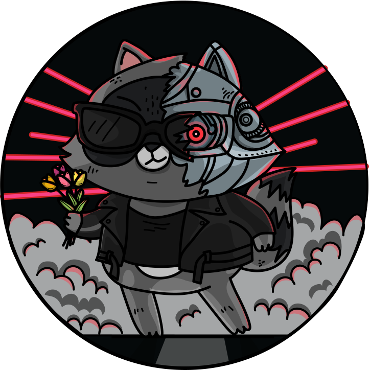
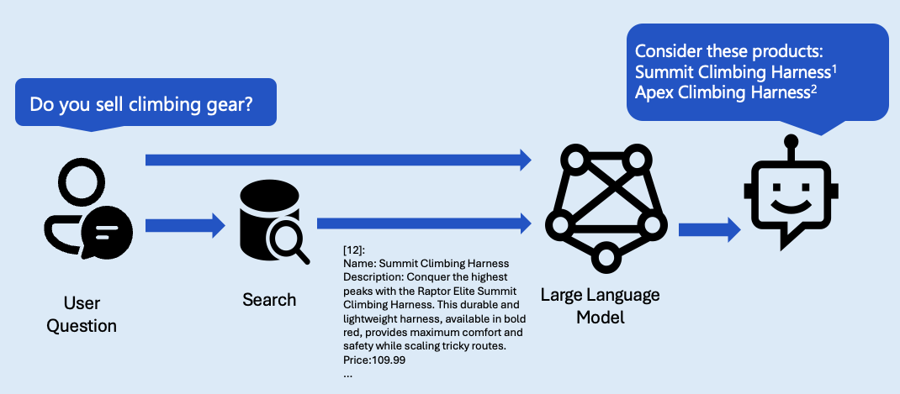
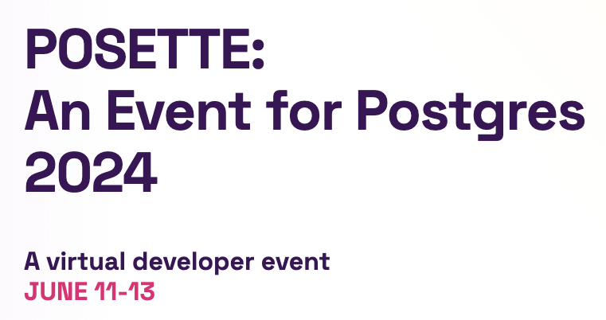

Python Web Apps:
Databases & ORMs
aka.ms/python-web-apps-dbs
Meet Pamela

Python Cloud Advocate at Microsoft
Formerly: UC Berkeley, Coursera, Khan Academy, Google
Find Pamela online at:
| Mastodon | @pamelafox@fosstodon.org |
| @pamelafox | |
| GitHub | www.github.com/pamelafox |
| Website | pamelafox.org |
Today's topics

- Databases
- 👩🏾💻 Exercise: PostgreSQL Playground
- Using databases from Python
- 👩🏼💻 Exercise: PostgreSQL Playground Part 2
- Using Flask with databases
- 👩🏻💻 Exercise: Example Flask + DB app
- Deploying web apps and databases
- 🧑🏿💻 Exercise: Deploying PostgreSQL
- 👨🏻💻 Exercise: Deploying Flask+PG app
Exercise tools
To follow along with the exercises, you can do either:
- Online development with Codespaces:
- Local development with VS Code:
- Local development with any editor:
- Code editor
- Python 3
- PostgreSQL
Databases & ORMs
Why databases?
Web apps use databases to store data that needs to be shared across multiple users or computers.

Database types

Two main types of databases:
- Non-relational databases, such as...
- MongoDB
- Redis
- Cosmos DB for NoSQL
- Relational databases, such as...
- PostgreSQL
- MySQL
- SQLite
- MS SQL server
Non-relational databases
A non-relational database stores data in a very flexible way, often as JSON documents or as key-value stores.
Example document in a MongoDB collection:
{
"username": "Pamela Fox",
"email": "pamelafox@microsoft.com"
}
Example key-value pair in a Redis store:
usersession1234: { "username": "Pamela Fox", "email": "pamelafox@microsoft.com" }
Relational databases
A relational database contains tables.
Each table has columns and rows.
Example table called speakers:
| id | name | title |
|---|---|---|
| 1 | Pamela Fox | Python Cloud Advocate |
| 2 | Renee Noble | Python Cloud Advocate |
| 3 | Victor Vazquez | Software Developer |
| 4 | Dawn Wages | Python Community Advocate |
SQL
SQL (Structured Query Language) is a language for querying and modifying relational databases.
SQL commands:
SELECT- get dataINSERT- add dataUPDATE- modify dataDELETE- remove data
Learn SQL for free with my course on Khan Academy: khanacademy.org/computing/computer-programming/sql
PostgreSQL
PostgreSQL is a popular open-source relational database that supports JSON, XML, and other data types.
CREATE TABLE cities (
name varchar(80),
location point
);
INSERT INTO cities VALUES ('San Francisco', '(-194.0, 53.0)');
SELECT name FROM cities WHERE location <@ circle '((0,0), 300)';
There are many popular extensions for PostgreSQL like PostGIS for geospatial data and pgvector for vector similarity search.
Python libraries for PostgreSQL: psycopg (driver), SQLAlchemy (ORM)
Playgrounds: PostgreSQL playground, pgvector playground
Exercise: Play with PostgreSQL
Using this repo:
github.com/pamelafox/postgresql-playground
aka.ms/postgres-playground
- Open in GitHub Codespaces or VS Code with Dev Containers extension
- Copy
.env.devcontainerinto a.envfile - Open the SQLTools extension from the sidebar and select 'Local database'
- Enter these SQL statements and select 'Run on active connection':
CREATE TABLE restaurants (id SERIAL PRIMARY KEY, name VARCHAR(255) NOT NULL); INSERT INTO restaurants (name) VALUES ('Casa Latina'); SELECT * FROM restaurants; - Explore the results in the extension
Accessing databases from Python

Accessing databases from Python: SQL
One option is to call SQL directly from a database driver.
import psycopg2
conn = psycopg2.connect(
host=os.environ["PGHOST"],
database=os.environ["PGDATABASE"],
user=os.environ["PGUSSER"],
password=os.environ["PGPASS"],
)
cur = conn.cursor()
cur.execute("CREATE TABLE restaurants (id SERIAL PRIMARY KEY, name VARCHAR(255) NOT NULL)")
conn.commit()
cur.close()
Risks of using SQL directly
⚠️ Executing raw SQL makes your app vulnerable to SQL injection attacks.
What you expect:
user_input = "Bobby"
query = "SELECT name, id FROM users where name = " + user_input
What a hacker could do:
user_input = "Bobby); DROP TABLE students;"
query = "SELECT name, title id users where name = " + user_input
Accessing databases from Python: ORM
A safer approach is to use an ORM (Object-Relational Mapper) to interact with the database.
An ORM represents table rows as Python objects, and provides methods for querying and modifying data.
A SQLAlchemy example:
class Restaurant(Base):
__tablename__ = "restaurants"
id: Mapped[int] = mapped_column(primary_key=True)
name: Mapped[str]
rating: Mapped[int]
query = select(Restaurant).where(Restaurant.title == "Casa Latina")
results = session.execute(query)
Querying with SQLAlchemy 2.0
Get by primary key:
session.get(Restaurant, 42)
Get all rows in table:
session.execute(select(Restaurant)).scalars().all()
Finding rows by column value:
session.execute(select(Restaurant).where(
Restaurant.name == "Casa Latina")).scalars().all()
Play with queries in
PostgreSQL Playground
aka.ms/postgres-playground
Flask + databases

Using Flask with SQLAlchemy
Flask is a lightweight web framework for Python, which does not come with any built-in database functionality.
A common way to use Flask with SQLAlchemy:
- Install Flask-SQLAlchemy extension
- Install Flask-Migrate extension
- Define models using Python classes
- Run database migrations
- Use SQLAlchemy queries in routes
Example: Flask + PostgreSQL
github.com/Azure-Samples/azure-flask-postgres-flexible-appservice
aka.ms/flask-pg-app
- App setup is in __init__.py.
- Routes are in pages.py.
- Models are in models.py and use SQLAlchemy 2.0.
Run app server:
python3 -m flask --app src.flaskapp run --debug --reload --port=8000
Database migrations
Migrations are a way to keep track of changes to the database schema.
- When you make a change to the database schema, create a migration file.
Using Flask-Migrate:
python3 -m flask --app src.flaskapp db migrate --directory src/flaskapp/migrations - Run the migration file to update the database.
Using Flask-Migrate:
python3 -m flask --app src.flaskapp db upgrade --directory src/flaskapp/migrations
Exercise: Flask app
Using this repo:
github.com/Azure-Samples/azure-flask-postgres-flexible-appservice
aka.ms/flask-pg-app
- Follow the readme steps to get the app running.
- Inspect the local DB tables using SQLTools extension.
- Submit an info request and find new row in SQLTools.
- Change the destinations route to return destinations ordered by name, using order_by.
- Reload and confirm the destinations appear sorted.
More Flask + DB examples
- github.com/pamelafox/flask-db-quiz-example
- github.com/pamelafox/translation-telephone
- github.com/pamelafox/flask-surveys-container-app
Also check out the Flask tutorial.
Generative AI + Databases
Vector search
Vector search is a way to find similar items in a database, and is used in recommendation systems, search engines, and chatbots.
SQL:
SELECT * FROM items ORDER BY embedding <=> '[3,1,2]' LIMIT 5;
SQLAlchemy:
closest = session.scalars(
select(Item).order_by(Item.embedding.cosine_distance(target_embedding)).limit(5)
)
for item in closest:
print(item.title)
Try it in: github.com/pamelafox/pgvector-playground
RAG: Retrieval Augmented Generation
RAG with PostgreSQL
We can use LLMs to answer questions about PostgreSQL tables.
Example:
Azure-Samples/rag-postgres-openai-python
aka.ms/rag-postgres
That example uses FastAPI, but it could also use Flask/Quart.
More resources: GenAI + PostgreSQL
Recorded talks:

-
Building a RAG-powered AI chat app with Python
by Pamela Fox
Upcoming Posette talks:
-
pgvector for Python developers
by Pamela Fox -
Semantic search with Django, PostgreSQL, & pgvector
by Paolo Melchiorre
Hosting web apps + databases

Database hosting options
Consider:
- How much database storage do you need?
- How many database read/writes do you expect?
- How much latency can you tolerate between app/DB?
- What sort of backup policy do you need?
- Data sovereignty: where can your data be stored?
- Do you need multiple replicas for high availability?
Managed services for PostgreSQL on Azure
| Option | Description |
|---|---|
| Azure Database for PostgreSQL – Single Server | Microsoft's original offering. No longer recommended for new apps. |
| Azure Database for PostgreSQL – Flexible Server | Microsoft's most recent PostgreSQL offering. Fully managed service with vertical scaling. |
| Azure Cosmos DB for PostgreSQL | Distributed database using PostgreSQL and the Citus extension. Can scale horizontally. |
| Azure Container Apps PostgresQL service | A sidecar service that runs alongside your containerized app. |
Cosmos DB for PostgreSQL vs. Flex Server 🔗 aka.ms/flex-vs-cosmos
Exercise: Deploy a PostgreSQL Flexible Server
Using this repo:
github.com/Azure-Samples/azure-postgres-pgvector-python
aka.ms/azure-postgres-pgvector
- Open in GitHub Codespaces or VS Code with Dev Containers extension
- Sign up for a free Azure account
- Follow the Deploying instructions in the README
- Run a script to confirm the database is working
Web app hosting options
The web app can be hosted on the same server as the database, or on a separate server.
Many possible hosts:
- A rented computer in a data center
- A virtual machine
- A PaaS (platform as a service)
Consider:
- How much control do you want?
- How much do you enjoy administering systems?
- Do you need your app to scale up/out?
Azure web app hosting options
| Azure Container Apps | Azure Functions | |||
| Azure Kubernetes Service | Container Management | Azure App Service | Serverless | |
| Environment | Containers | PaaS | ||
| Cloud | Azure | |||
For Flask, App Service is an easy way to get started.
But wait, there's more!
Your app may need more than just a web server and a database.
| Networking | DNS Zone, Virtual Network, VPN Gateway, ... |
|---|---|
| Security | Key Vault, Security Center, ... |
| Storage | Blob Storage, Files, Archive Storage, ... |
| Caching | CDN, Front Door, ... |
| Machine Learning | Translator, Bot Service, Computer Vision, ... |
| ...and more! | |
Hosting Python + PostgreSQL on Azure

Using the Azure Dev CLI:
azd up
Exercise: Deploying an app
- Sign up for a free Azure account
- Either open one of the previous projects in Codespaces or follow these installation steps for the Azure Developer CLI.
- Run
azd up. If prompted, login to your Azure account. - If it deploys successfully, visit the endpoint URL to confirm it's working.
- Run
azd downto un-deploy the app (so that you don't waste cloud resources unnecessarily).
Security considerations
When connecting to a database from a web app, consider...
Restricting authentication:
- ⭐️ Use passwordless authentication for the database
See aka.ms/azure-postgres-pgvector and aka.ms/rag-postgres - If you do have to use passwords, store in Azure KeyVault
See aka.ms/flask-pg-app
Restricting network access:
- ⭐️ Put the database and app in the same virtual network
See aka.ms/flask-pg-vnet - If you can't use a VNet, use a firewall to restrict access to the database
See aka.ms/flask-pg-app
⚠️ The firewall still allows access from other Azure-hosted apps.
More Azure resources

Any questions?